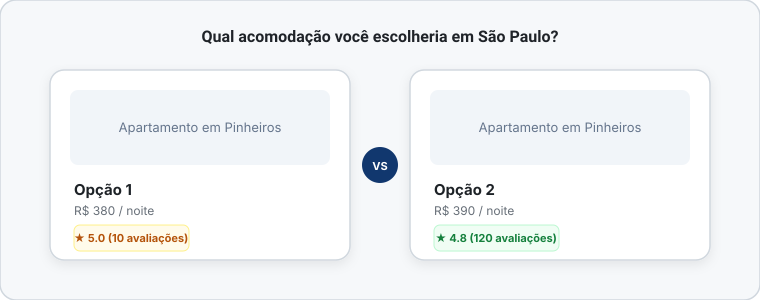
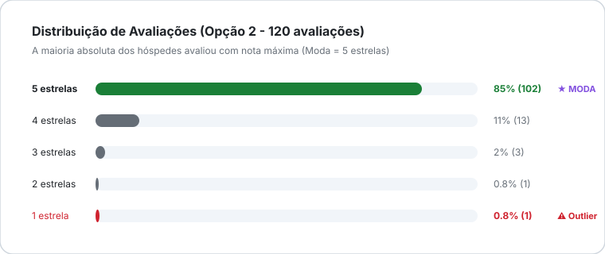

Você tem um compromisso em São Paulo e esta no Airbnb para fazer uma reserva. Depois de muito analisar a localidade e preço você fica em dúvida entre duas opções:

Qual você escolhe?
Se você respondeu de imediato “A opção 1, claro!” - esse post é para você. Esse exemplo simples esconde algumas das ideias mais importantes da estatística, e entendê-las pode mudar a forma como você lê qualquer dado.
Inspirado no livro Naked Statistics, de Charles Wheelan - uma das leituas mais acessíveis e divertidas sobre estatística - pretendo aqui mostrar três conceitos fundamentais da estatística descritiva: média, moda e mediana. Sem fórmulas intimidadoras.
O problema dos números que “mentem” sem mentir
A ideia da estatística descritiva é reduzir uma quantidade enorme de dados a um punhado de números que realmente dizem algo. O problema é que qualquer simplificação abre espaço para distorções, às vezes acidentais, às vezes deliberadas.
Como Wheelan diz sobre estatística descritiva:
As estatísticas descritivas podem ser como perfis de namoro online: tecnicamente corretas e ainda assim bem enganosas
Isso resume tudo. Os números geralmente estão certos. O problema está em o que eles escondem.
1. Média: a ferramenta mais usada (e a mais mal usada)
A média aritmética é a operação mais básica da estatística: soma todos os valores e divide pela quantidade de elementos.
- Jeito que todo mundo entende
$$
média =\frac{\text{soma dos valores}}{\text{número de elementos}}
$$
- Jeito na linguagem matemática
$$
\bar{x} = \frac{\sum_{i=1}^{n} x_i}{n}
$$
A história que Wheelan conta para mostrar o problema da média é muito boa. Ele fala para gente imaginar 10 pessoas sentadas no balcão de uma bar. Cada um ganha R$5 mil por mês. A média de renda dessas pessoas é R$5 mil. Até aqui faz sentido?
Imagina que entra a Virginia nesse bar. Ela tem uma renda mensal de R$6 milhões (fontes da minha cabeça). Quando ela se senta na décima primeira banco do balcão, a média de renda dos frequentadores do bar sobre para R$550 mil.
Nenhuma das outras 10 pessoas ficaram 1 centavo mais ricas. Mas a média diz que todos são “meio milionários”. O problema tem um nome: outlier. Um valor extremo, muito fora da curva, que distorce completamente a média. E isso não é só um problema de bares imaginários, isso acontece o tempo todo:
- A renda per capita de um país pode subir enquanto a maioria das pessoas ficam mais pobres, se os mais ricos enriqueceram muito.
- A nota média de uma turma pode parecer boa porque alguns alunos tiraram 10 em tudo, enquanto metade está abaixo do suficiente.
- A avaliação média de um produto pode ser 4.7 mesmo com muitos clientes insatisfeitos, se os entusiastas votam em massa com nota máxima.
2. Mediana: o antídoto para os outliers
A mediana surge para resolver o problema da média. O valor que fica bem no meio de uma distribuição quando todos os dados são ordenados. Metade dos valores fica acima dela, metade abaixo.
Voltando para o bar com a Virginia. As 10 pessoas ganhando R$5 mil cada, a mediana de renda é R$5 mil. Quando a Virginia chega, a mediana continua sendo R$5 mil. Se o Vini Junior aparecer e se sentar do lado da Virginia, a mediana ainda não mudará pois a mediana ignora os extremos.
Uma boa prática é sempre olhar a média e a mediana e se forem muito diferentes. certamente há um outlier influenciando a média.
3. Moda: o valor mais frequente
A moda é o conceito mais simples dos três. Ela é simplesmente o valor que aparece com mais frequência em um conjunto de dados. Ela é menos usada no cotidiano, mas incrivelmente útil em contextos específicos - especialmente quando você quer saber o que é mais comum, não o que é matematicamente central.
Um bom lugar para usar a moda é em avaliação de apps. Se 70% dos usuários de um aplicativo dão nota 4, a moda é 4. Saber isso é diferente de saber que a média é 3,8, porque revela que existe um padrão claro de satisfação, e que os extremos negativos puxam a média para baixo sem representar a maioria.
Voltando ao casa do Airbnb
A opção A tem média 5.0, mas com apenas 10 corridas. Estatisticamente, isso é quase irrelevante. Com uma amostra tão pequena, podemos inferir algumas hipóteses:
- Essas avaliações podem ter sido feita por amigos e familiares.
- Uma única avaliação ruim no futuro vai derrubar a nota significativamente
- A média não tem estabilidade - ela pode mudar muito.
A opção B tem média 4.8 com 120 avaliações. Essa média é construída sobre uma base sólida de experiências diversas, ,em diferentes condições, com passageiros variados. Ela já sobreviveu a algumas experiências ruins e ainda assim se manteve alta.
Nesse caso, trazendo para a vida real, eu procuro sempre ler os comentários que os hóspedes deixam. Por ser em São Paulo, em Pinheiros, sempre tem novos prédios em construção, então olhos principalmente os comentários mais recentes.
Também olho a moda, pois se a moda é 5, isso significa que, embora algumas avaliações baixam puxem a média para baixo, a experiência mais comum é a nota 5.

Leitura recomendada: Se você quer entender estatística de verdade, sem trauma, sem fórmulas assustadoras, o livro Estatística: O que é, para que serve, como funciona (Charles Wheelan, 2013) é o ponto de partida perfeito. Wheelan mostra que estatística não é sobre números: é sobre entender o mundo, e perceber quando os números estão te contando apenas metade da história.

Marcos Aurélio
Senior Business Analytics com passagens por Nubank, Google e Asimov Academy. Especialista em traduzir dados complexos em decisões estratégicas de produto, IA e governança.